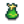

Warning: Spoilers  This page or section contains unmarked spoilers from update 1.6 of Stardew Valley. Players may want to avoid or be cautious toward reading this article/section.
|
|
|
This article is marked as a stub for the following reason:
- Gifting, Bundles, and Quests? Item mechanics?
|
.png) |
| An old tradition for celebrations and festivities. Handle with care! |
| Information |
| Source |
|
| Sell Price |
data-sort-value="50"> 50g 50g
|
- See also: Fireworks (Red), Fireworks (Purple).
Fireworks (Green) is an item that can be purchased from Qi's Walnut Room for data-sort-value="1"> 1 or from the Casino for data-sort-value="200">
1 or from the Casino for data-sort-value="200"> 200.
200.
Tailoring
Fireworks (Green) can be used in the spool of the Sewing Machine to create the  Party Hat (green). It can be used in dyeing, serving as a green dye at the dye pots, located in Emily's and Haley's house, 2 Willow Lane.
History
- 1.5: Existed in the game's code, but unobtainable.
- 1.6: Officially introduced in game.